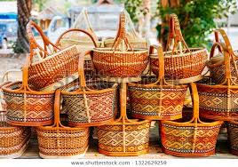
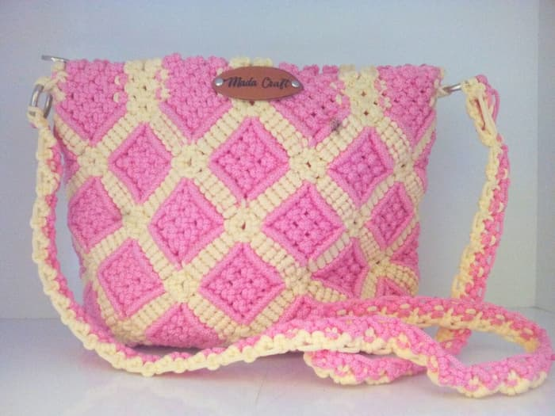
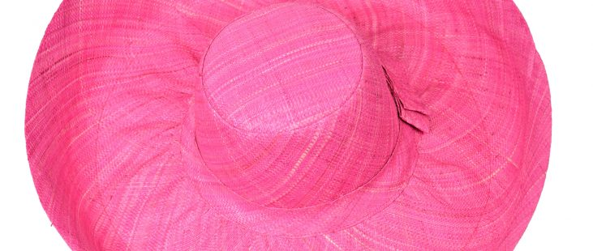

Products
Handmade is everywhere in Madagascar. Everyone has his/her own skill. Most people in madagascar make crafts such as baskets, pockets and hats. They use local materials and their products are useful. We can find the products in the market or on exhibition. I was inspired by the young women who are good at making the basket. They are so quick and take it as their career. So if you want, you can buy them and use them at home or when you go to the market.
  
Location
The East Coast of Madagascar is the most popular of making crafts because people need hats when they walk through the beach. The reason why is that the visitors like the place and the weather is too hot. It is also good idea to use basket instead of plastic bags. Do you know why?. Because plastic bags destroy our environment. Environmental footprint cause diseases.